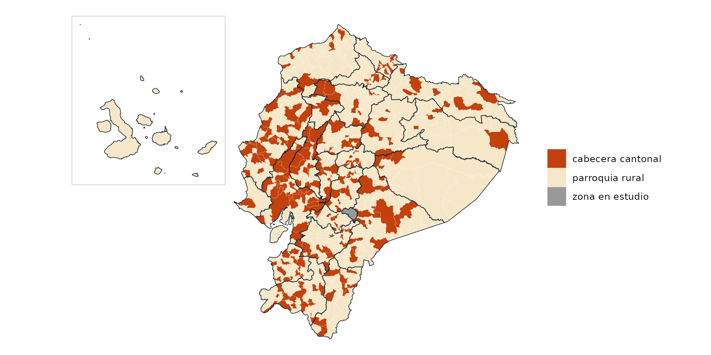

Fuente
Las capas de geoecu se construyen a partir de la Organización Territorial del Estado (OTE) que mantiene el Comité Nacional de Límites Internos (CONALI), a través de la Dirección de Límites Territoriales Internos del Ministerio de Gobierno del Ecuador.
| Capa | ORGANIZACION_TERRITORIAL_PARROQUIAL |
| Versión | 17 de julio de 2026 |
| Publicación | Portal de datos abiertos del Ecuador |
| Licencia | Creative Commons Atribución (CC BY) |
| Escala de origen | 1:5.000 y 1:50.000, sobre cartografía base oficial |
| Sistema de origen | WGS 84 / UTM zona 17 Sur (EPSG:32717) |
Según los metadatos de la capa, el acceso es sin restricción y el Directorio del CONALI autoriza su publicación por cualquier medio, con la condición de citar la fuente:
Límites territoriales de la Organización Territorial del Estado interparroquiales, aprobados por el Directorio del CONALI en sesión ordinaria del 24 de marzo de 2022, 17 de enero de 2023 y 13 de marzo de 2026.
geoecu es un paquete independiente: no es un producto oficial del CONALI ni del Ministerio de Gobierno, que no lo respaldan. La información oficial y vigente sobre límites internos es la que publica el CONALI.
Procesamiento
Los scripts están en data-raw/
del repositorio y se ejecutan en este orden:
-
01_simplificar.sh(con mapshaper):- Lee la capa parroquial y excluye el polígono sin código numérico
(
"ISLA", un islote de 11 km² frente a la costa de Manabí). - Limpia la topología y simplifica las geometrías conservando la forma de todos los polígonos: tolerancia de 10 m (resolución alta) y 250 m (resolución baja).
- Construye cantones y provincias disolviendo las parroquias por código DPA. Por eso los tres niveles encajan exactamente.
- Reproyecta a WGS84 (EPSG:4326).
- Lee la capa parroquial y excluye el polígono sin código numérico
(
-
02_construir_datos.R: renombra columnas, asigna eltipode cada unidad, calculaarea_km2en UTM 17S sobre la resolución alta y escribe los GeoPackagesgeoecu_dpa_baja.gpkgygeoecu_dpa_alta.gpkgy el catálogodpa. -
03_figuras_readme.R: figuras del README. -
04_equivalencias.R: tabladpa_equivalenciascon la versión anterior. -
05_logo.R: logo y favicons del sitio.
Los GeoPackages se publican en el release datos-v0.2.0.
geoecu verifica la huella MD5 de cada descarga antes de guardarla en
caché.
Cobertura
table(dpa$tipo)
#>
#> cabecera cantonal parroquia rural zona en estudio
#> 223 825 3
length(unique(dpa$dpa_canton[dpa$tipo != "zona en estudio"])) # cantones
#> [1] 223
length(unique(dpa$dpa_provin[dpa$tipo != "zona en estudio"])) # provincias
#> [1] 24
prov <- reubicar_galapagos(read_provincias(crs = 32717))
parr <- reubicar_galapagos(read_parroquias(crs = 32717))
ggplot() +
geom_sf(data = parr, aes(fill = tipo), color = "white", linewidth = 0.04) +
geom_sf(data = prov, fill = NA, color = "#0F2233", linewidth = 0.25) +
geom_sf(data = marco_galapagos(prov), fill = NA, color = "grey75") +
scale_fill_manual(values = c("cabecera cantonal" = "#C2410C",
"parroquia rural" = "#F6E7C8",
"zona en estudio" = "grey60"), name = NULL) +
theme_void() +
theme(legend.position = "right")
Parroquias urbanas
La OTE del CONALI delimita las parroquias rurales y
la cabecera cantonal de cada cantón. Las parroquias
urbanas, que cada municipio define dentro de su cabecera, no se publican
como polígonos separados. En geoecu, por tanto, cada cabecera cantonal
es un único polígono (código terminado en 50).
Zonas en estudio
Son territorios cuyos límites internos aún no se han resuelto. La
capa de origen los incluye con códigos propios y geoecu los conserva,
para que el mapa no tenga huecos, con
tipo = "zona en estudio":
subset(dpa, tipo == "zona en estudio",
c(dpa_parroq, parroquia, dpa_canton, dpa_provin))
#> dpa_parroq parroquia dpa_canton dpa_provin
#> 689 139090 ZONA EN ESTUDIO "JARAMIJO-MANTA" 1390 13
#> 698 140190 ZONA EN ESTUDIO "SINAÍ-CUCHAENTZA" 1401 14
#> 1051 900651 ZONA EN ESTUDIO: JUVAL (CAÑAR-CHIMBORAZO) 9006 90-
Jaramijó-Manta (Manabí): zona de nivel cantonal,
código de cantón
"1390". - Sinaí-Cuchaentza (Morona Santiago): zona de nivel parroquial dentro del cantón Morona.
-
Juval (Cañar-Chimborazo): zona entre provincias,
con código de provincia
"90". Por esoread_provincias()devuelve 25 filas.
Cambios respecto a versiones anteriores
geoecu 0.3.0 y anteriores usaban otra capa de origen (release
datos-v0.1.0), con 1262 parroquias, incluidas las urbanas,
y 221 cantones. La tabla dpa_equivalencias relaciona cada
parroquia anterior con las actuales según la superposición de sus
áreas:
princ <- subset(dpa_equivalencias, principal)
table(princ$cambio)
#>
#> código distinto integrada en la cabecera cantonal
#> 20 238
#> sin cambio
#> 1004Las parroquias con código distinto corresponden a la creación del cantón Borbón (antes parte de Eloy Alfaro), a la cantonización de Sevilla Don Bosco, a la recodificación de Bella Vista en Santa Cruz (Galápagos) y a cambios de límites:
subset(princ, cambio == "código distinto",
c(dpa_parroq_anterior, parroquia_anterior, dpa_parroq, parroquia, proporcion))
#> dpa_parroq_anterior parroquia_anterior dpa_parroq
#> 124 030157 RIVERA 900651
#> 357 071203 BALNEARIO JAMBELI (SATELITE) 071252
#> 399 080251 ANCHAYACU 080951
#> 400 080252 ATAHUALPA (CAB. EN CAMARONES) 080952
#> 401 080253 BORBON 080950
#> 403 080255 LUIS VARGAS TORRES (CAB. EN PLAYA DE ORO) 080953
#> 404 080256 MALDONADO 080954
#> 406 080258 SAN FRANCISCO DE ONZOLE 080955
#> 407 080259 SANTO DOMINGO DE ONZOLE 080956
#> 408 080260 SELVA ALEGRE 080957
#> 409 080261 TELEMBI 080958
#> 410 080262 COLON ELOY DEL MARIA 080959
#> 411 080263 SAN JOSE DE CAYAPAS 080960
#> 412 080264 TIMBIRE 080961
#> 860 140157 SEVILLA DON BOSCO 141350
#> 951 160162 SIMON BOLIVAR (CAB. EN MUSHULLACTA) 160167
#> 1035 170203 JUAN MONTALVO 170257
#> 1036 170250 CAYAMBE 170257
#> 1180 200353 BELLA VISTA 200351
#> 1240 220254 TIPUTINI 220250
#> parroquia proporcion
#> 124 ZONA EN ESTUDIO: JUVAL (CAÑAR-CHIMBORAZO) 0.591
#> 357 JAMBELÍ 0.999
#> 399 ANCHAYACU 1.000
#> 400 ATAHUALPA 1.000
#> 401 BORBÓN 0.999
#> 403 LUIS VARGAS TORRES 0.999
#> 404 MALDONADO 1.000
#> 406 SAN FRANCISCO DE ONZOLE 1.000
#> 407 SANTO DOMINGO DE ONZOLE 1.000
#> 408 SELVA ALEGRE 1.000
#> 409 TELEMBÍ 1.000
#> 410 COLÓN ELOY DEL MARÍA 1.000
#> 411 SAN JOSÉ DE CAYAPAS 1.000
#> 412 TIMBIRÉ 1.000
#> 860 SEVILLA DON BOSCO 0.991
#> 951 SHUAR PASTAZA 0.724
#> 1035 JUAN MONTALVO 0.997
#> 1036 JUAN MONTALVO 0.864
#> 1180 BELLA VISTA 0.998
#> 1240 NUEVO ROCAFUERTE 0.820Para convertir tus tablas, usa actualizar_codigo() (ver
la Guía de
uso).
Por otro lado, las versiones 0.2.1 a 0.3.0 atribuían los datos al Instituto Geográfico Militar (IGM), lo que no era correcto. Desde la versión 0.4.0 la fuente es la OTE del CONALI.
Actualizaciones
El CONALI actualiza la OTE cuando se crean cantones o parroquias por ley u ordenanza publicada en el Registro Oficial. Las circunscripciones creadas después del 17 de julio de 2026 no aparecen hasta la siguiente versión de datos de geoecu. Si notas una diferencia, abre un issue indicando el Registro Oficial correspondiente.